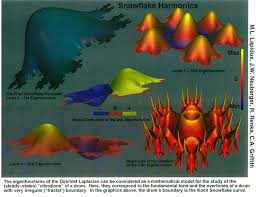
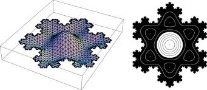
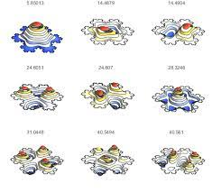

Here are a few (low resolution) images of eigenfunctions of the Laplacian, \[ \frac{\partial^2 u}{\partial t^2} = \frac{\partial^2 u}{\partial x^2} + \frac{\partial^2 u}{\partial y^2},\] on the Koch Snowflace, with zero Dirichlet Boundary conditions.
  Here is an interesting paper written by three proffessors at NAU (Dr. Neuberger, Dr Sieben and Dr. Swift) on the eigenfunctions of the Laplacian on the Koch Snowflake.